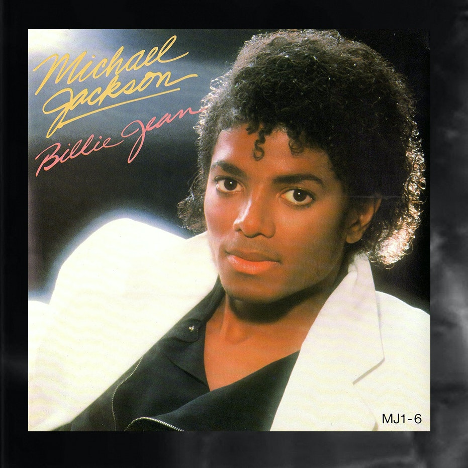

<!doctype html>
<html lang="en" class="background-image">
</html>
<head>
	<meta charset="utf-8" />
	<title>Never Gonna Give You Too Much Info</title>
	<link rel="stylesheet" href="../css/a2song1.css">
</head>
<body>
	<div id="big_wrapper">
	
		<header id="the_header">
			<h2>  Never Gonna Give You Too Much Info</h2>
		</header>
		
		<section id="the_section">
		
			<section>
				
			</section>
			
			<footer id="not_footer">
				<br>
				<p>Released: January 2, 1983</p>
			</footer>
			
			<footer id="not_footer">
				<br>
				<p>Recorded at: 1982</p>
			</footer>
			
			<footer id="not_footer">
				<br>
				<p>Songwriter: Michael Jackson</p>
			</footer>

			<footer id="not_footer">
				<br>
				<p>Producers: Quincy Jones • Michael Jackson</p>
			</footer>
			
			<footer id="not_footer">
				<br>
				<p>Genre: Post-disco • R&B • funkdance-pop</p>
			</footer>
			
			<footer id="not_footer">
				<br>
				<p>Length: 4:54 (album/single version), 6:20 (12-inch version)</p>
			</footer>
			
			<footer id="not_footer">
				<br>
				<p>Fun Fact 1: "Billie Jean" reached number one on the Billboard Hot 100, topped the Billboard Hot Black Singles chart within three weeks.</p>
			</footer>
			
			<footer id="not_footer">
				<br>
				<p>Fun Fact 2: Jackson's performance of "Billie Jean" on the TV special Motown 25: Yesterday, Today, Forever won acclaim and was nominated for an Emmy Award.</p>
			</footer>
			
			<footer id="not_footer">
				<br>
				<p>Fun Fact 3: "Billie Jean" was awarded honors including two Grammy Awards and an American Music Award.</p>
			</footer>
			
			<footer id="not_footer">
				<br>
				<p>Source: https://en.wikipedia.org/wiki/Billie_Jean</p>
			</footer>
			
			<footer id="the_footer">
				<br>
				<br>
				<p>Back to Home Page:</p>
			
					<a href="HCI Website.html">
						<button>To Home Page</button>
					</a>
			</footer>
			
		</section>
	</div>
	
		<button id="btn">
		
	</button>
	
	<script>
		const btn = document.querySelector("#btn");
		
		btn.addEventListener("click", function () {
			window.scrollTo(0, 0);
		});
	</script>
</body>

<style>
	*{
	margin: 0;
	padding: 0;
	}
	
	.background-image {
		background-image: url(../images/bg4.jpg);
		background-size: cover;
		background-repeat: no-repeat;
		height: 135vh;
		}
		
#btn{
	position: fixed;
	right: 10px;
	bottom: 10px;
	width: 45px;
	height: 45px;
	border-radius: 50%;
	background: white;
	outline: none;
	cursor: pointer;
}
</style>

<html>
</html>